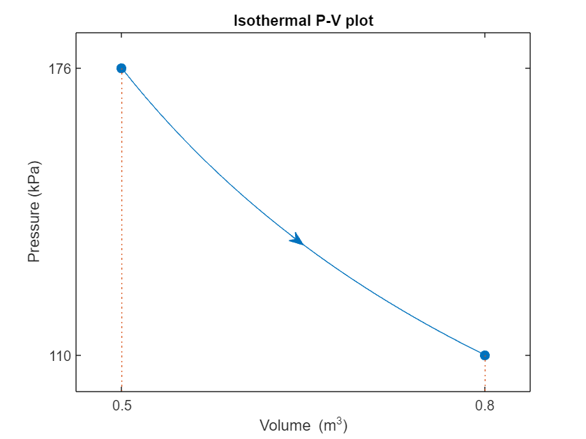
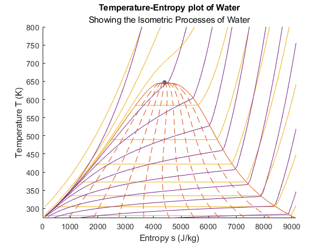
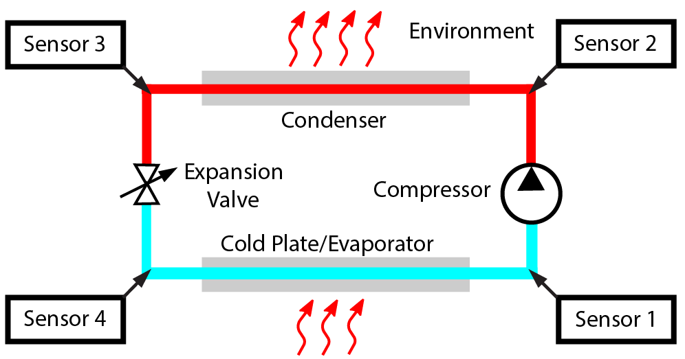

Thermodynamics
Information
This curriculum module contains interactive
MATLAB® live scripts
that teach fundamental concepts and basic terminology related to
introductory thermodynamics. Topics addressed include units, the first and second laws of
thermodynamics, state variables, work, and the components of a refrigeration cycle.
Thermodynamics covers a variety of standard introductory topics aimed at engineers. The
first law of thermodynamics explores conservation laws as well as units, energy, and systems.
There is a short script introducing more thermodynamic terminology as well as creating pressure-volume plots.
A longer script walks through computing the work done by a single-process and by cyclic processes. The
second law of thermodynamics addresses sources, sinks, and thermal efficiency. The state plots script
presents various ways to plot information about the states of matter.
Applications include exploring a complete model of a refrigeration cycle.
You can use these live scripts as demonstrations in a lecture, class activities,
or interactive assignments outside of class. The module is divided into
five interactive instructional scripts and one project.
The instructions inside the live scripts will guide you through the exercises and activities.
Get started with each live script by running it one section at a time. To stop running the script
or a section midway (for example, when an animation is in progress), use the Stop button in the
RUN section of the Live Editor tab in the MATLAB Toolstrip.
If you find an issue or have a suggestion, email the MathWorks online teaching team at
onlineteaching@mathworks.com.
Prerequisites
These scripts assume background knowledge of common thermodynamic terminology as covered in secondary
education such as temperature, pressure, kinetic energy, and potential energy as well as fluency
with basic integral calculus. There is minimal MATLAB knowledge required for FirstLaw, SecondLaw
and StatePlots, but you could use MATLAB Onramp
as a resource to acquire familiarity with live scripts and MATLAB syntax. More familiarity with
MATLAB is required for CreatePVplots, CalculateWork and Model_Fridge, as those are designed in
Code Visible format. Familiarity with Simulink at the level of
Simulink Onramp
may be helpful for Model_Fridge as well.
For those interested in additional coding, the module includes instructions for installing and accessing
CoolProp as well as a project to build the simple refrigerator model out of standard component blocks.
BuildRefrigerator requires Simulink Onramp,
at a minimum. If possible, Simscape Onramp
would be helpful as well. Students are expected to find and insert specified blocks, connect blocks together,
edit block parameters, rename blocks, copy and paste subsystems, run simulations, and explore output.
Getting Started
Products
MATLAB®, Simscape™, Simulink®, Simulink® Real-Time™, Stateflow®, Symbolic Math Toolbox™, Image Processing Toolbox™
MATLAB and Symbolic Math Toolbox are used throughout. Simulink and Simscape are used in Model_Fridge.mlx and BuildRefrigerator.mlx. Image Processing Toolbox is used in Model_Fridge.mlx.
Tools from Simulink, Simulink Real-Time, and Stateflow are used in CalculateWork.mlx.
Scripts
Organization of the Thermodynamics Module
Topic
In this script, students will...
First Law of Thermodynamics
Pressure-Volume Diagrams

Boundary Work

Second Law of Thermodynamics

Properties of Pure Substances

Explore a Refrigeration Model

Copyright 2023 The MathWorks™, Inc.